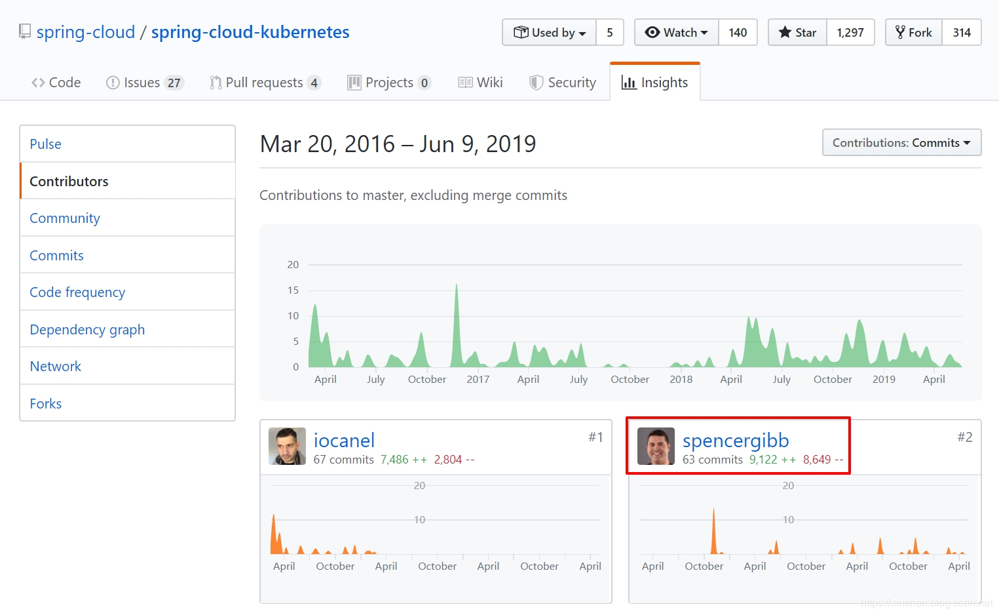
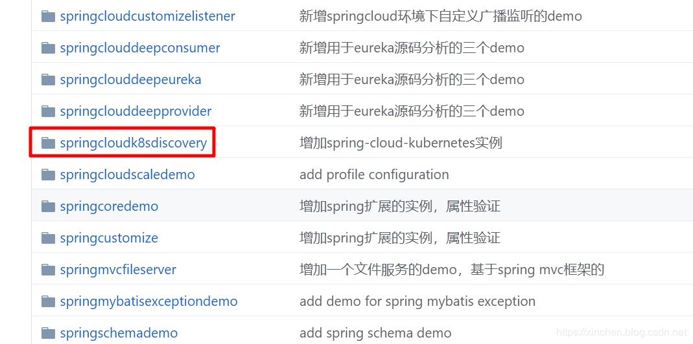
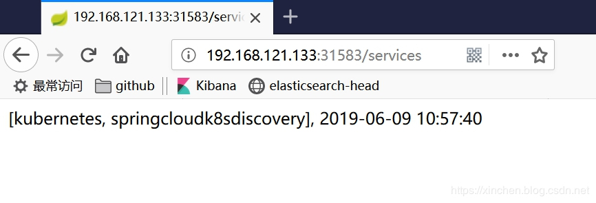
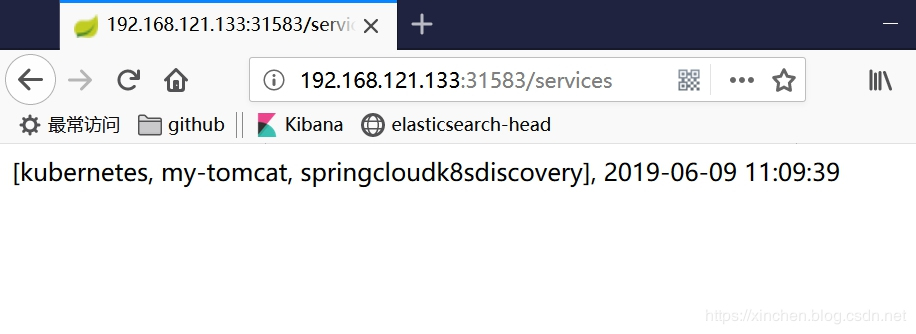

原文连接:https://www.cnblogs.com/bolingcavalry/p/11451063.html
关于spring-cloud-kubernetes
spring-cloud-kubernetes是springcloud官方推出的开源项目，用于将Spring Cloud和Spring Boot应用运行在kubernetes环境，并且提供了通用的接口来调用kubernetes服务，GitHub上官方地址是：https://github.com/spring-cloud/spring-cloud-kubernetes
该项目的提交者之一，就是SpringCloud的作者之一Spencer Gibb：

系列文章列表
本文是《spring-cloud-kubernetes实战系列》的第二篇，全文链接如下：
- 《spring-cloud-kubernetes官方demo运行实战》
- 《你好spring-cloud-kubernetes》
- 《spring-cloud-kubernetes背后的三个关键知识点》
- 《spring-cloud-kubernetes的服务发现和轮询实战(含熔断)》
- 《spring-cloud-kubernetes与SpringCloud Gateway》
- 《spring-cloud-kubernetes与k8s的configmap》
通过官方demo来了解spring-cloud-kubernetes
spring-cloud-kubernetes项目也提供了丰富的官方demo来帮助开发者了解和学习spring-cloud-kubernetes，您可以参考《spring-cloud-kubernetes官方demo运行实战》快速体验官方demo；
实战spring-cloud-kubernetes
今天实战的内容是开发一个简单的java应用，然后将其部署在kubernetes环境（minikube 1.1.1），该应用通过spring-cloud-kubernetes调用当前kubernetes的服务；
环境信息
本次实战的环境和版本信息如下：
- 操作系统：CentOS Linux release 7.6.1810
- minikube：1.1.1
- Java：1.8.0_191
- Maven：3.6.0
- fabric8-maven-plugin插件：3.5.37
- spring-cloud-kubernetes：1.0.1.RELEASE
上面的linux、minikube、java、maven，请确保已准备好，linux环境下minikube的安装和启动请参考《Linux安装minikube指南 》。
准备工作已经OK，开始编码吧。
源码下载
如果您不打算写代码，也可以从GitHub上下载本次实战的源码，地址和链接信息如下表所示：
| 名称 | 链接 | 备注 |
|---|---|---|
| 项目主页 | https://github.com/zq2599/blog_demos | 该项目在GitHub上的主页 |
| git仓库地址(https) | https://github.com/zq2599/blog_demos.git | 该项目源码的仓库地址，https协议 |
| git仓库地址(ssh) | git@github.com:zq2599/blog_demos.git | 该项目源码的仓库地址，ssh协议 |
这个git项目中有多个文件夹，本章源码在springcloudk8sdiscovery这个文件夹下，如下图红框所示：

开发应用
- 基于maven创建一个springboot应用，名为springcloudk8sdiscovery；
- 该应用完整的pom.xml内容如下：
<?xml version="1.0" encoding="UTF-8"?>
<project xmlns="http://maven.apache.org/POM/4.0.0" xmlns:xsi="http://www.w3.org/2001/XMLSchema-instance"
xsi:schemaLocation="http://maven.apache.org/POM/4.0.0 http://maven.apache.org/xsd/maven-4.0.0.xsd">
<modelVersion>4.0.0</modelVersion>
<parent>
<groupId>org.springframework.boot</groupId>
<artifactId>spring-boot-starter-parent</artifactId>
<version>2.1.1.RELEASE</version>
<relativePath/> <!-- lookup parent from repository -->
</parent>
<groupId>com.bolingcavalry</groupId>
<artifactId>springcloudk8sdiscovery</artifactId>
<version>0.0.1-SNAPSHOT</version>
<name>springcloudk8sdiscovery</name>
<description>Demo project for Spring Boot</description>
<properties>
<java.version>1.8</java.version>
<spring-boot.version>2.1.1.RELEASE</spring-boot.version>
<maven-compiler-plugin.version>3.5</maven-compiler-plugin.version>
<maven-deploy-plugin.version>2.8.2</maven-deploy-plugin.version>
<maven-failsafe-plugin.version>2.18.1</maven-failsafe-plugin.version>
<maven-surefire-plugin.version>2.21.0</maven-surefire-plugin.version>
<fabric8.maven.plugin.version>3.5.37</fabric8.maven.plugin.version>
</properties>
<dependencyManagement>
<dependencies>
<dependency>
<groupId>org.springframework.boot</groupId>
<artifactId>spring-boot-dependencies</artifactId>
<type>pom</type>
<scope>import</scope>
<version>${spring-boot.version}</version>
</dependency>
</dependencies>
</dependencyManagement>
<dependencies>
<dependency>
<groupId>org.springframework.cloud</groupId>
<artifactId>spring-cloud-kubernetes-core</artifactId>
<version>1.0.1.RELEASE</version>
</dependency>
<dependency>
<groupId>org.springframework.cloud</groupId>
<artifactId>spring-cloud-kubernetes-discovery</artifactId>
<version>1.0.1.RELEASE</version>
</dependency>
<dependency>
<groupId>org.springframework.cloud</groupId>
<artifactId>spring-cloud-commons</artifactId>
<version>2.1.1.RELEASE</version>
</dependency>
<dependency>
<groupId>org.springframework.boot</groupId>
<artifactId>spring-boot-starter</artifactId>
<version>2.1.1.RELEASE</version>
</dependency>
<dependency>
<groupId>org.springframework.boot</groupId>
<artifactId>spring-boot-starter-web</artifactId>
<version>2.1.1.RELEASE</version>
</dependency>
<!--
We need that(actuator) so that it can be used in readiness probes.
Readiness checks are needed by arquillian, so that it
knows when to run the actual test.
-->
<dependency>
<groupId>org.springframework.boot</groupId>
<artifactId>spring-boot-starter-actuator</artifactId>
<version>2.1.1.RELEASE</version>
</dependency>
<dependency>
<groupId>com.alibaba</groupId>
<artifactId>fastjson</artifactId>
<version>1.2.28</version>
</dependency>
</dependencies>
<build>
<plugins>
<plugin>
<groupId>org.springframework.boot</groupId>
<artifactId>spring-boot-maven-plugin</artifactId>
<version>${spring-boot.version}</version>
<executions>
<execution>
<goals>
<goal>repackage</goal>
</goals>
</execution>
</executions>
</plugin>
<plugin>
<!--skip deploy -->
<groupId>org.apache.maven.plugins</groupId>
<artifactId>maven-deploy-plugin</artifactId>
<version>${maven-deploy-plugin.version}</version>
<configuration>
<skip>true</skip>
</configuration>
</plugin>
<plugin>
<groupId>org.apache.maven.plugins</groupId>
<artifactId>maven-surefire-plugin</artifactId>
<version>${maven-surefire-plugin.version}</version>
<configuration>
<skipTests>true</skipTests>
<!-- Workaround for https://issues.apache.org/jira/browse/SUREFIRE-1588 -->
<useSystemClassLoader>false</useSystemClassLoader>
</configuration>
</plugin>
<plugin>
<groupId>io.fabric8</groupId>
<artifactId>fabric8-maven-plugin</artifactId>
<version>${fabric8.maven.plugin.version}</version>
<executions>
<execution>
<id>fmp</id>
<goals>
<goal>resource</goal>
</goals>
</execution>
</executions>
</plugin>
</plugins>
</build>
<profiles>
<profile>
<id>kubernetes</id>
<build>
<plugins>
<plugin>
<groupId>io.fabric8</groupId>
<artifactId>fabric8-maven-plugin</artifactId>
<version>${fabric8.maven.plugin.version}</version>
<executions>
<execution>
<id>fmp</id>
<goals>
<goal>resource</goal>
<goal>build</goal>
</goals>
</execution>
</executions>
<configuration>
<enricher>
<config>
<fmp-service>
<type>NodePort</type>
</fmp-service>
</config>
</enricher>
</configuration>
</plugin>
</plugins>
</build>
</profile>
<profile>
<id>release</id>
<build>
<plugins>
<plugin>
<groupId>io.fabric8</groupId>
<artifactId>fabric8-maven-plugin</artifactId>
<version>${fabric8.maven.plugin.version}</version>
<executions>
<execution>
<id>fmp</id>
<goals>
<goal>resource</goal>
<goal>helm</goal>
</goals>
</execution>
</executions>
</plugin>
</plugins>
</build>
</profile>
<profile>
<id>integration</id>
<build>
<plugins>
<plugin>
<groupId>io.fabric8</groupId>
<artifactId>fabric8-maven-plugin</artifactId>
<version>${fabric8.maven.plugin.version}</version>
<executions>
<execution>
<id>fmp</id>
<goals>
<goal>resource</goal>
<goal>build</goal>
</goals>
</execution>
</executions>
</plugin>
<plugin>
<groupId>org.apache.maven.plugins</groupId>
<artifactId>maven-failsafe-plugin</artifactId>
<version>${maven-failsafe-plugin.version}</version>
<executions>
<execution>
<id>run-integration-tests</id>
<phase>integration-test</phase>
<goals>
<goal>integration-test</goal>
<goal>verify</goal>
</goals>
</execution>
</executions>
<configuration>
<skipTests>false</skipTests>
<skipITs>false</skipITs>
</configuration>
</plugin>
</plugins>
</build>
</profile>
</profiles>
</project>上述pom.xml文件有几处需要关注：
a. 直接依赖了spring-cloud-kubernetes的以下两个库，后面才能使用spring-cloud-kubernetes的服务：
org.springframework.cloud:spring-cloud-kubernetes-core:1.0.1.RELEASE
org.springframework.cloud:spring-cloud-kubernetes-discovery:1.0.1.RELEASEb. 使用插件fabric8-maven-plugin来构建镜像并部署到minikube环境：
<plugin>
<groupId>io.fabric8</groupId>
<artifactId>fabric8-maven-plugin</artifactId>
<version>${fabric8.maven.plugin.version}</version>
<executions>
<execution>
<id>fmp</id>
<goals>
<goal>resource</goal>
</goals>
</execution>
</executions>
</plugin>c. 为fabric8-maven-plugin插件准备了三个profile，本次实战主要用到kubernetes这个：
<profile>
<id>kubernetes</id>
<build>
<plugins>
<plugin>
<groupId>io.fabric8</groupId>
<artifactId>fabric8-maven-plugin</artifactId>
<version>${fabric8.maven.plugin.version}</version>
<executions>
<execution>
<id>fmp</id>
<goals>
<goal>resource</goal>
<goal>build</goal>
</goals>
</execution>
</executions>
<configuration>
<enricher>
<config>
<fmp-service>
<!--部署到kubernetes后，会创建一个类型为NodePort的service-->
<type>NodePort</type>
</fmp-service>
</config>
</enricher>
</configuration>
</plugin>
</plugins>
</build>
</profile>以上就是pom.xml的内容了，主要是添加spring-cloud-kubernetes的依赖，以及使用fabric8来构建和部署；
- 在application.properties文件中设置应用名称：
spring.application.name=springcloudk8sdiscovery- 创建应用启动类Springcloudk8sdiscoveryApplication，可见这是个很普通的springboot启动类：
package com.bolingcavalry.springcloudk8sdiscovery;
import org.springframework.boot.SpringApplication;
import org.springframework.boot.autoconfigure.SpringBootApplication;
import org.springframework.cloud.client.discovery.EnableDiscoveryClient;
@SpringBootApplication
@EnableDiscoveryClient
public class Springcloudk8sdiscoveryApplication {
public static void main(String[] args) {
SpringApplication.run(Springcloudk8sdiscoveryApplication.class, args);
}
}- 创建controller类，对外提供http服务，部署完成后通过这些http服务来验证功能：
@RestController
public class DiscoveryController {
@Autowired
private DiscoveryClient discoveryClient;
/**
* 探针检查响应类
* @return
*/
@RequestMapping("/health")
public String health() {
return "health";
}
/**
* 返回远程调用的结果
* @return
*/
@RequestMapping("/getservicedetail")
public String getservicedetail(
@RequestParam(value = "servicename", defaultValue = "") String servicename) {
return "Service [" + servicename + "]'s instance list : " + JSON.toJSONString(discoveryClient.getInstances(servicename));
}
/**
* 返回发现的所有服务
* @return
*/
@RequestMapping("/services")
public String services() {
return this.discoveryClient.getServices().toString()
+ ", "
+ new SimpleDateFormat("yyyy-MM-dd HH:mm:ss").format(new Date());
}
}上述代码有几点需要注意：
a. health方法用于响应kubernetes的探针检查；
b. getservicedetail方法接收名为servicename的参数，然后去服务列表中检查对应的服务对象并返回；
c. services方法返回的是所有服务的名称；
以上就是所有代码了，功能是通过autowire得到DiscoveryClient实例，再调用该实例的API取得服务信息。
接下来我们将应用构建并部署到minikube环境；
编译构建
- 请确保当前电脑上java、maven、minikube都是正常的；
- 在pom.xml文件所在目录执行以下命令，即可编译构建部署一次性完成：
mvn clean package fabric8:deploy -Pkubernetes构建成功后，控制台输出信息如下：
...
[INFO]
[INFO] <<< fabric8-maven-plugin:3.5.37:deploy (default-cli) < install @ springcloudk8sdiscovery <<<
[INFO]
[INFO]
[INFO] --- fabric8-maven-plugin:3.5.37:deploy (default-cli) @ springcloudk8sdiscovery ---
[INFO] F8: Using Kubernetes at https://192.168.121.133:8443/ in namespace default with manifest /usr/local/work/demo/springcloudk8sdiscovery/target/classes/META-INF/fabric8/kubernetes.yml
[INFO] Using namespace: default
[INFO] Updating a Service from kubernetes.yml
[INFO] Updated Service: target/fabric8/applyJson/default/service-springcloudk8sdiscovery.json
[INFO] Using namespace: default
[INFO] Updating Deployment from kubernetes.yml
[INFO] Updated Deployment: target/fabric8/applyJson/default/deployment-springcloudk8sdiscovery.json
[INFO] F8: HINT: Use the command `kubectl get pods -w` to watch your pods start up
[INFO] ------------------------------------------------------------------------
[INFO] BUILD SUCCESS
[INFO] ------------------------------------------------------------------------
[INFO] Total time: 11.207 s
[INFO] Finished at: 2019-06-09T18:50:09+08:00
[INFO] ------------------------------------------------------------------------- 用kubectl命令查看部署和服务，都处于正常状态：
[root@minikube springcloudk8sdiscovery]# kubectl get deployments
NAME READY UP-TO-DATE AVAILABLE AGE
springcloudk8sdiscovery 1/1 1 1 75m
[root@minikube springcloudk8sdiscovery]# kubectl get svc
NAME TYPE CLUSTER-IP EXTERNAL-IP PORT(S) AGE
kubernetes ClusterIP 10.96.0.1 <none> 443/TCP 33h
springcloudk8sdiscovery NodePort 10.102.167.79 <none> 8080:31583/TCP 75m- 执行命令minikube service springcloudk8sdiscovery --url，得到的是可以从外部访问的服务地址：http://192.168.121.133:31583 ，其中192.168.121.133是宿主机IP地址；
- 在浏览器上访问地址http://192.168.121.133:31583/services ，如下图，返回的"所有服务"其实是kubernetes中的所有service：
 - 为了验证当前namespace下的所有服务都能被发现，我们再创建个服务实施，执行以下命令，会创建名为my-tomcat的部署和服务：
kubectl run my-tomcat --image=tomcat:7.0.94-jre7-alpine --replicas=2 --port=8080 \
&& kubectl expose deployment my-tomcat --port=8080 --target-port=8080 --external-ip=192.168.50.7 --type=LoadBalancer由于下载镜像需要一定时间，所以需要稍作等待；
- 再去访问地址http://192.168.121.133:31583/services ，如下图，my-tomcat赫然在列：
 - 访问地址http://192.168.121.133:31583/getservicedetail?servicename=my-tomcat ，会得到名为my-tomcat的服务信息，该信息格式化后的内容如下所示：
[
{
"host": "172.17.0.4",
"instanceId": "91201db9-8aa6-11e9-a5b5-000c29fd2001",
"metadata": {
"run": "my-tomcat"
},
"port": 8080,
"scheme": "http://",
"secure": false,
"serviceId": "my-tomcat",
"uri": "http://172.17.0.4:8080"
},
{
"host": "172.17.0.5",
"instanceId": "91223cda-8aa6-11e9-a5b5-000c29fd2001",
"metadata": {
"$ref": "$[0].metadata"
},
"port": 8080,
"scheme": "http://",
"secure": false,
"serviceId": "my-tomcat",
"uri": "http://172.17.0.5:8080"
}
]可见spring-cloud-kubernetes的DiscoveryClient服务将kubernetes中的"service"资源与SpringCloud中的服务对应起来了，有了这个DiscoveryClient，我们在kubernetes环境就不需要eureka来做注册发现了，而是直接使用kubernetes的服务机制，此时不得不感慨SpringCloud的对DiscoveryClient的设计是如此的精妙。
至此，spring-cloud-kubernetes的初体验就结束了，通过简单的编码我们的程序在kubernetes环境可以取得service资源的信息，随着学习的深入，我们会用到更多的spring-cloud-kubernetes能力，感谢spring-cloud-kubernetes的设计者，让我们的SpringCloud应用畅游在在kubernetes世界。
疑惑待解
您可能会有些疑惑：上面的代码都是和SpringCloud相关的，和spring-cloud-kubernetes没什么关系呀，为什么程序运行起来后就能取得kubernetes环境中的服务信息呢？
此问题如果不弄清楚，后面的学习很难展开，因为我们都不知道自己的代码与kubernetes环境有什么关系，和kubernetes有没有交互？
以上问题，欢迎访问《spring-cloud-kubernetes背后的三个关键知识点》，这里面有详细的分析。
欢迎关注我的公众号